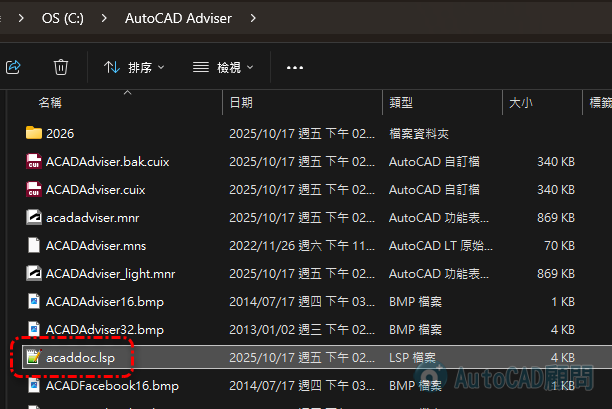

以下是【論壇外掛程式】自訂指令清單整理版
已依功能分類，方便你查閱與記憶
（指令就是在 AutoCAD 直接輸入的那個名稱）：
一、前次選集（P）快速操作
指令 功能說明
MM 移動「前次選取」的物件
MII 鏡射「前次選取」的物件
EEE 刪除「前次選取」的物件
CC 複製「前次選取」的物件
SS 比例縮放「前次選取」的物件
二、繪圖 / 建構輔助
指令 功能說明
LK 線追蹤（LINE + TK）
L0 從座標 0,0 畫線
XD 偏移建構線（XLINE Offset）
三、圓角（FILLET）快速指令
指令 功能說明
F0 多重圓角，半徑設為 0
FM 多重圓角（沿用目前半徑）
四、空間切換 / 視圖
指令 功能說明
0 模型 / 配置空間快速切換
1 切換到模型空間（Tilemode = 1）
2 切換到配置空間（Tilemode = 0）
五、出圖 / 系統功能
指令 功能說明
4 出圖預覽（Preview）
5 發佈（Publish）
7 頁面設定（Page Setup）
9 選項（Options）
QN 關閉圖檔（自動回答 Yes）
六、縮放（ZOOM）系列
指令 功能說明
ZA 縮放全部（Zoom All）
ZD 動態縮放（Zoom Dynamic）
ZE 縮放到實際畫面（Zoom Extents + 微縮）
ZS 視窗拉近（1.1 倍）
ZX 視窗拉遠（0.9 倍）
ZW 縮放至指定物件
ZZ 回到前一次視窗
👇自訂指令程式檔位置:
C:\AutoCAD Adviser\acaddoc.lsp

如果要更改可以自行將 C:XXX 改成你要的指令名稱

例如: CC指令
(DEFUN C:CC ()
改為 ccc指令
(DEFUN C:CCC ()
如果要取消此指令可以加入在前面 ;
例如:
(DEFUN C:CC () (SETVAR "CMDECHO" 0) (PROMPT "複製前次選集物件") (COMMAND "COPY" "P") (PRIN1))
改為
;(DEFUN C:CC () (SETVAR "CMDECHO" 0) (PROMPT "複製前次選集物件") (COMMAND "COPY" "P") (PRIN1))
註：請留意其他程式碼不得任意更改，這樣會造成論壇外掛無法正常使用。